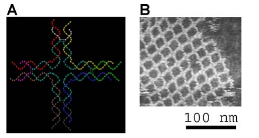

Dans la conception et la fabrication de nanotechnologies, deux approches opposées et
complémentaires sont utilisées : la première est une voie ascendante, dite
bottom-up, et consiste à partir de structures élémentaires pour construire atome par atome ou
molécule par molécule la nanostructure voulue ; la seconde est la voie descendante, dite topdownmark, et consiste à partir de blocs de matière et à la subdiviser selon un schéma précis afin
d’obtenir des structures à dimension nanométrique. La fabrication par voie ascendante s’inspire
pour partie de ce que nous observons déjà dans le vivant pour concevoir des machines
moléculaires inspirées de la biologie, ou de créer des systèmes capables « d’assembler les
atomes entre eux, puis les molécules, en s’appuyant sur des procédés physiques, chimiques ou
mécaniques » . Si l’assemblage de matière par des procédés imitant la biologie reste moins
répandu car plus complexe comparé aux procédés chimiques, physique et mécaniques, ils ne
cessent de se développer depuis les années 2000.
Nous allons voir d’abord quelques-unes des sources d’inspiration naturelles pour la
création de système nanométriques , puis des méthodes de conception correspondant à
chacune des deux voies de fabrication :les approches top-down , et bottom-up .
La bioinspiration et le biomimétisme
De nombreuses structures nanométriques aux propriétés saisissantes sont présentes dans la nature, en particulier sur des animaux et végétaux qui nous entourent. C’est en les observant de près pour tenter de comprendre l’origine de ces propriétés que les chercheurs ont compris que la nanostructure était essentielle. Quelques exemples évocateurs permettent d’illustrer le potentiel de cette source d’inspiration:.
- Les pattes de geckos
L’un des plus connus est celui des pattes de geckos qui permettent à ces reptiles arboricoles de grimper sur des surfaces fortement inclinées et lisses, y compris verticales voire même à plus de 90°. Ils doivent cette faculté à leurs setæ sous les doigts, sortes de coussinets si adhérents sur les surfaces qu’ils peuvent supporter le poids de l’animal. Ces structures se subdivisent en sétules de 200 à 500 nm qui engagent des interaction électrostatiques [15] et des forces de Van der Waals avec les supports, dont la somme est suffisante pour permettre aux geckos de se déplacer ou de rester en suspension sous une surface [16] (Figure 7). Cette particularité tente d’être reproduite pour des utilisations civiles et militaires, mais deux inconvénients majeurs se posent pour le moment : le fait que les setæ artificiels s’usent et ne se régénèrent pas comme ceux de l’animal, et le fait que pour décrocher une patte, les sétules peuvent changer d’orientation plus de 10 fois par seconde avec un mouvement en arrière des doigts, ce qui est difficile à reproduire artificiellement, même plus lentement
- Les feuilles de lotus

L’« Effet Lotus » est un phénomène inspiré de la plante du même nom, qui a la propriété d’être hyperhydrophobe et garde ses feuilles propres grâce au ruissellement de l’eau qui entraîne les dépôts solides avec elle . Ce principe, transposable à d’autres matériaux, à condition de résoudre entre autres les problèmes d’évaporation ou de stagnation de l’eau, a ouvert la porte à diverses applications commerciales, sur des textiles, des matériaux de construction, des peintures, des verres de lunettes ou des miroirs antibuée, ainsi que dans la confection de matériaux anti-infectieux en médecine.
bottom-up
La voie ascendante, bottom- up, consiste à assembler des composants
élémentaires (atomes, molécules, agrégats) pour fabriquer des structures
plus complexes. C’est l’une des voies d’avenir à plus ou moins long terme
pour dépasser les limitations de la "la loi de Moore" , dans le domaine de la
microélectronique. Mais c'est une voie encore au stade expérimental, la voie
descendante étant la seule à avoir déjà fait ses preuves dans l'industrie.
La structure en ADN à gauche s'assemblera d'elle-même pour former la
structure à gauche, visionnée par microscope à force atomique.
top-down
La voie descendante, top- down, consiste à miniaturiser des objets déjà existants de taille micro ou macrométrique pour se rapprocher des dimensions nanométriques. Dans la pratique cette voie utilise principalement l’amélioration des procédés de gravure de la microélectronique qui permettent de réaliser des structures de taille inférieure à quelques dizaines de nanomètres. Cette voie est utilisée depuis plus de 40 ans dans le domaine de la microélectronique. Elle a permis de mettre au point le circuit intégré sur puce.